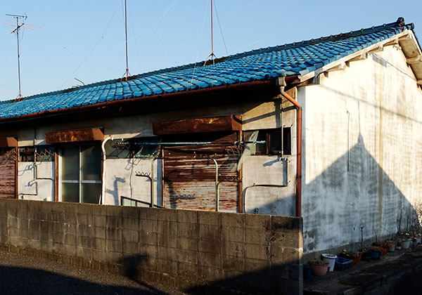
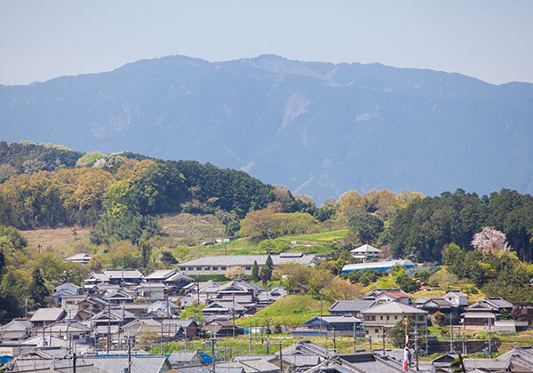
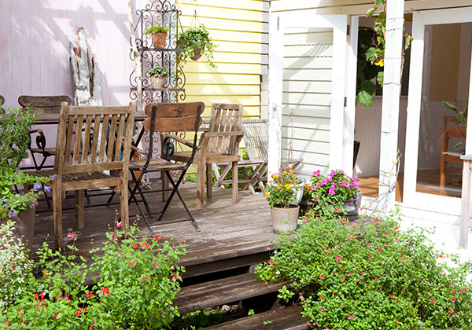
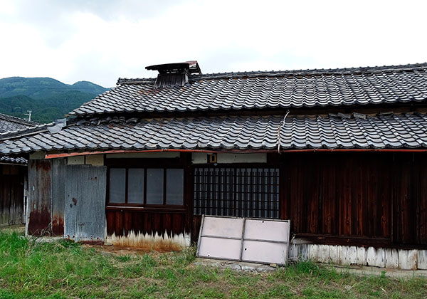
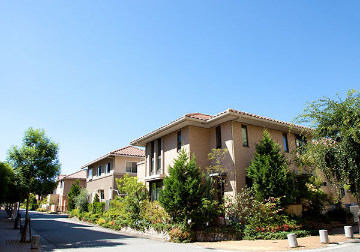
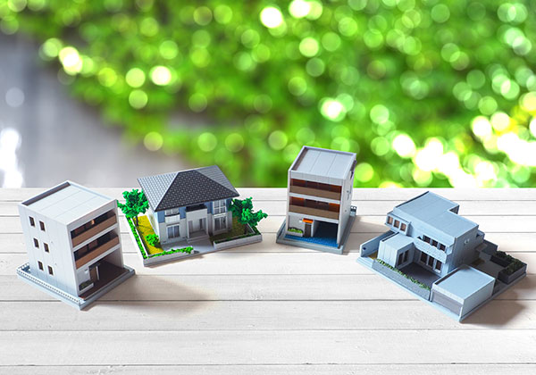
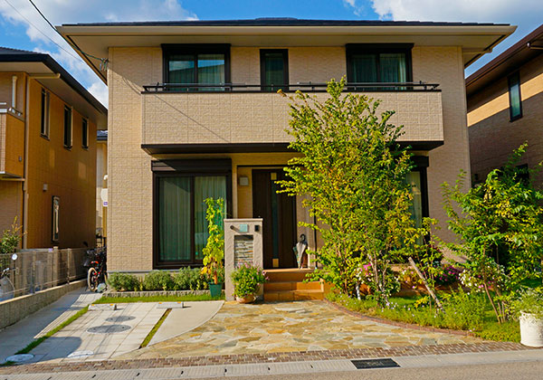
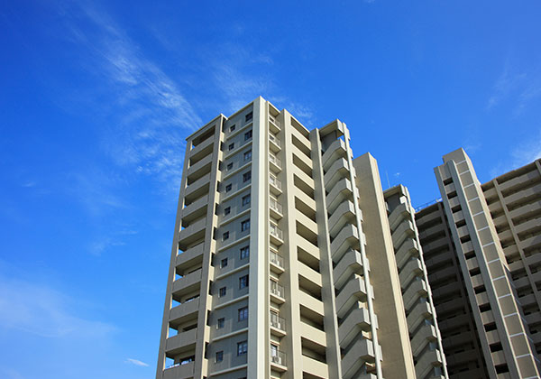
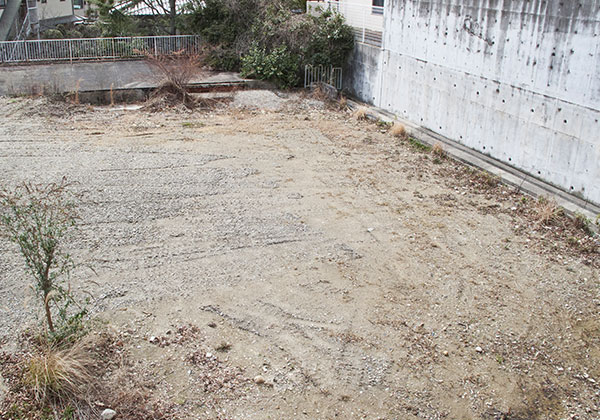

- HOME
- 相続問題・空き家・空き地について
相続問題や空き家・空き地でお困りなら不動産売却をESTATE
相続した土地などの不動産を相続人で分割せずに放置するとさまざまなリスクがあります。相続不動産は売却することで現金化し、分割できます。空き家・空き地も売却すれば、固定資産税がかからず、相続税対策も可能です。相続問題のお悩みや空き家・空き地対策のご相談は、埼玉県戸田市の株式会社英青リアルティにお任せください。
こんなお悩みやご相談はございませんか？
こんなお悩みやご相談はございませんか？
- 親から相続した土地を何もせず放置している
- 兄弟でアパートを相続したが、子どもの代まで残すのは不安
- 共有財産を分割する良い方法がないか
- 所有している空き地・空き家の固定資産税が負担
- 空き家を放置して近所から心配されている
資産分割を放置した際のデメリット
相続した資産を分割するには相続人全員の合意が必要で、つい後回しにしがちです。分割に期限はないですが、放置するとさまざまな問題が起きるデメリットがあります。
相続ができない
相続人が複数の場合は不動産などの資産を分割しない限り、正式な相続ができません。遺産分割協議書を作成して相続しますが、その手続きを行わないと、相続資産は手つかずの状態になります。相続人は一切関与できないため、損失を被ることになるでしょう。

相続手続きの申告は期限がある
相続税の申告は相続開始を知った日から10ヶ月以内、相続放棄するときは3ヶ月以内と期限が定められています。期限を過ぎると最悪の場合、申告自体を受け付けてもらえないことや、相続税などの税金で追徴課税を受けることがあります。相続税の申告前に遺産分割により資産を相続する必要があるので、分割は早めに取り掛かることをおすすめします。
不動産の税金や管理費用がかかる
相続資産を分割しなければ相続自体が認められず、名義は被相続人のままです。それでも固定資産税や都市計画税などの税金がかかり、土地や空き家などの管理費用も必要です。もし放置した不動産が原因で近所の方に損害を与えた場合は、実質は相続人が責任を負うことになります。そうなる前に遺産分割を行い、売却するなら早めに取り掛かることをおすすめします。

相続人が亡くなるケース
遺産分割の前に相続人が亡くなってしまうと、最初の相続手続きが済まないうちに次の相続に移行してしまいます。これは数次相続と呼ばれ、相続関係が非常に複雑化するため、その後の手続きが難しくなります。
勝手に相続登記される
遺産分割を放置すると共同の相続人がいる場合、不動産を勝手に共有名義で登記される恐れがあります。遺産分割が確定するまで相続人の共有財産となり、このときの持分割合は法定相続分となります。つまり遺産分割協議ができなくても、共有持分の相続登記は可能です。本来の不動産の相続人が遺産分割を放置した結果、他の相続人が勝手に共有登記を行い、法定相続分を第三者に売却することもあり得ます。本来の相続人は損失を受けることになります。

空き家・空き地を放置した際のデメリット
固定資産税が2～3倍に上がるリスク
これまで解体されない空き家は固定資産税や都市計画税の減額が受けられましたが、2014年から「特定空家等」に該当すると減税特例が適用外となりました。特定空家等とは倒壊の恐れがある、衛生上問題がある、景観を損なっている、生活環境のために放置が望ましくない状態の空き家を指します。特定空家等に指定されると建物の固定資産税は据え置きですが、土地の固定資産税が6倍になるため、トータルで2～3倍の増税になります。放置している空き家が特定空家等に指定される前に早めに対策を検討しましょう。・

空き家を強制解体する負担のリスク
役所から空き家の対処勧告を受けても放置していると、強制解体される恐れがあり、その場合は解体費用を請求されます。2014年に制定された空家対策特別措置法により、放置された空き家や空き地に対する役所の権限が強化されました。住民から苦情を受けた役所は空き家の所有者に勧告・命令を出しますが、それでも改善されない場合は強制解体する権限があります。
老朽化と倒壊のリスク
空き家は定期的にメンテナンスしないと建物や設備が劣化するだけでなく、換気が悪いことで湿気により腐蝕が進みます。住居として使用できず、リフォームでも修復不能になると賃貸売却も難しくなります。また古い物件は耐震基準が緩く、新基準に比べて倒壊率が2倍以上と高いです。空き家の7割は地震で倒壊しやすいとされています。

資産価値が下落する
特に地方の郊外にある空き地は不動産価値が下がる傾向があります。人口流出による過疎化で買い手が見つかりづらいことが原因の一つです。気づくと過疎地域に該当していたということもあり得ます。もう一つの原因が空き家の増加による供給過多です。住宅市場では新築人気が根強く、そもそも中古物件の需要が多くありません。推計では2033年の空き家率は30.2％に達し、3戸に1戸が空き家になる計算です。住宅の供給過剰の状態では空き家の価値は確実に下落すると考えられます。
ご近所トラブルの原因となる
空き家の放置は財産の問題だけでなく、近隣への迷惑・トラブルの原因となります。老朽化した家屋は倒壊や破損の恐れがあり、災害時の崩落などで所有者が責任を問われるケースがあります。豪雪地帯であれば雪下ろしをしないために雪崩れを起こすリスクも考えなくてはなりません。また、空き家の管理を怠ると自然発火が起きたり、放火されたりすることもあり、周辺住民に迷惑がかかります。
家財道具がそのままになっていれば、不審者の侵入・滞在を招き、犯罪の温床になる恐れも。ご近所に被害が及べば多額の賠償を請求される恐れがあります。その他、庭の草木が繁茂し、隣家に侵入したり、ゴミが放置されて悪臭や害虫が繁殖したりして、景観を損ねることにもなります。

不動産を売却した際のメリット
不動産は高額のため、売却をためらう方もいますが、不動産売却はデメリットがあまりなく、所有し続けることの損失の方が大きいです。不動産売却のリスクを知っておけば、回避することもできます。不動産売却のメリットを活かすために、リスクやデメリットについても把握しておきましょう。
不動産一般
国土交通省の調査では、個人が不動産を売却する大きな理由は生活費に充てるためとなっています。不動産を売却すれば現金化により、生活費の他に住み替え費用に充てたり、ローン返済に充当したりできます。不動産を所有しなくなるので、固定資産税や都市計画税の支払いも必要ありません。
他に金融機関でローンを組む際に加入した火災保険の保険料や、ローン保証会社に支払った保証料が戻って来ることがあるので、売却後は忘れずに申請しましょう。ただ、不動産会社の仲介による売却であれば仲介手数料や、不動産の譲渡所得税は発生するデメリットがあり、売却先が必ず見つかるとは限らないリスクはあります。不動産買取であればその心配はなく、仲介手数料も発生しません。

戸建て・マイホーム
よりよい住環境を求める住み替えのため、戸建てやマンションなどの居住用不動産を売却する場合は、譲渡益による譲渡所得税が軽減される特例があります。譲渡損が出た場合はその他の所得から3年間繰り越して控除も受けられます。ただ、購入希望者の内覧に対応する必要があり、引渡しまでに新居が見つからない、または売却先が決まらず新居の分とローンが二重になるリスクはあります。不動産買取は内覧の必要がなく確実に売却できます。

マンション・アパート
マンションやアパートを投資先として運用している場合、経費や税金など維持費用がかかる上、確実な収益の保証がありません。長期保有しているうちに値下がりする可能性もあります。投資用不動産を売却すれば、維持費が不要になり、値下がりリスクを回避し、より利回りの高い物件の購入資金に充てることも可能です。一方で今後の収益の機会は無く、売却のタイミングによっては損失になるリスクがあります。不動産買取であれば売却時期を選べます。

土地
土地は用途によって固定資産税の税率が変わり、居住用地であれば税率は安く、更地のままだと税率が高くなります。使い道がない土地を所有しているだけで、無駄な税金を払い続けなければなりません。売却すれば税金などの維持費が不要になり、長期保有することで値下がりするリスクを回避できます。相続した土地であれば売却することで相続税の支払いに充て、支払いから3年の間に譲渡すれば、相続税を土地取得費用に回して譲渡税の免除が可能です。
他にもより不動産価値のある土地の購入資金に充てることができます。一方で今後の収益の機会は無く、相続した土地であれば相続登記をしなければならないデメリットがあります。リスクとしては更地にするための取り壊し費用がかかるケースや、更地の土地を購入する希望者はある程度限定されることがあります。不動産買取であれば購入希望者を見つける必要はありません。
